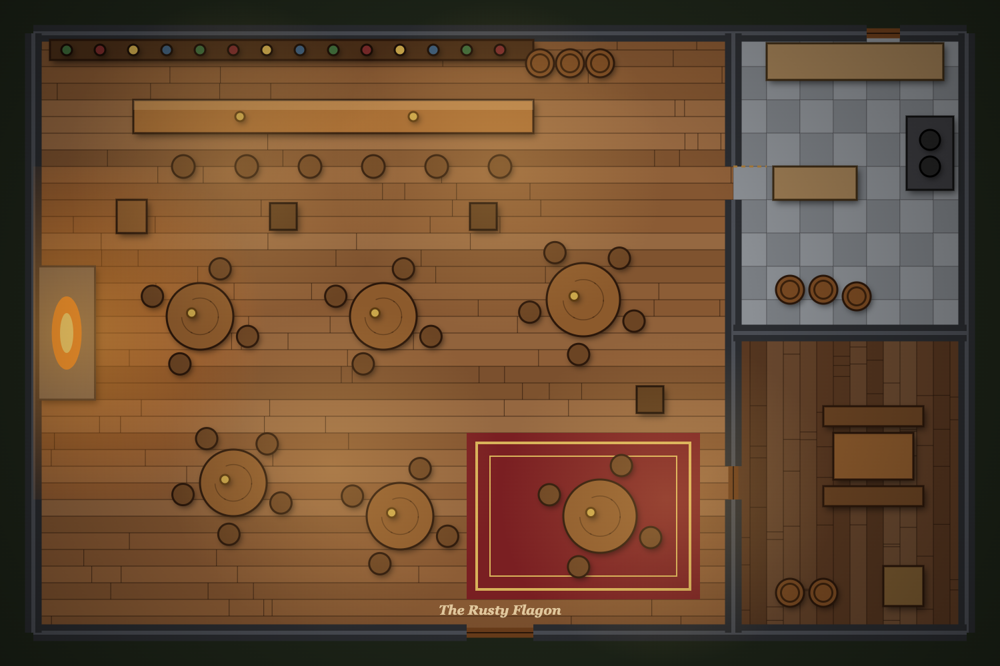
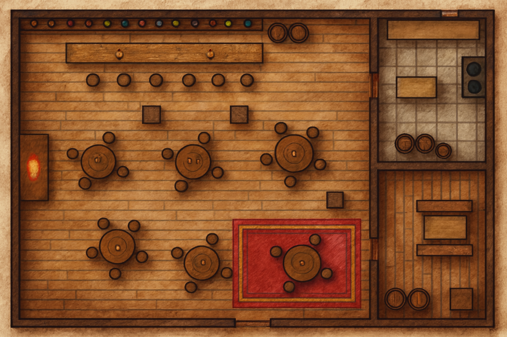

Claude's code-drawn tavern, repainted by ChatGPT's image editor in the chosen hand-inked style with the layout locked (about $0.07). The map's walls, doors and start spot are unchanged and sit on the new picture; the tavern in the tabletop and the Test Lab now uses it. Open it in Map Test to try a token.

